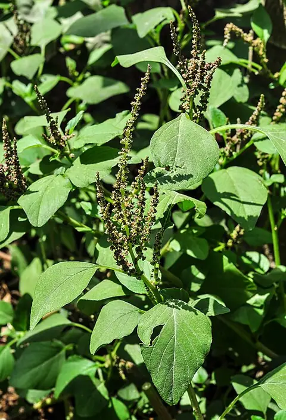

Amaranth
Amaranth is a wild green you can forage from June to November across India. Upright weed of field edges and empty plots, oval leaves, spiky flower tips.

When is amaranth in season in India?
Amaranth is usually in season June to November. Timing shifts with weather, latitude and altitude.
Where does amaranth grow in India?
Amaranth grows across India. Regions: South India, West coast and Deccan, Thar and dry northwest, Central forests, East, Northeast, Northern plains, Himalaya.
How do you recognise amaranth?
Upright weed of field edges and empty plots, oval leaves, spiky flower tips.
How do you harvest amaranth?
Pinch off the young tips and top leaves with your fingers or scissors. Leave the lower leaves and roots so the plant regrows. Pick in the morning, away from roads and drains.
How do you eat amaranth?
Stir-fry, saag, dal or poriyal. Young tips are the tenderest.
How do you store amaranth?
Blanch and shade-dry, or cook and freeze. Seeds can be collected and popped.
What is amaranth good for?
Iron & calcium, Vitamin A, Vitamin C.
What can you cook with amaranth?
- Dantu soppu saaru: Amaranth simmered with dal, tamarind and rasam powder, tempered with garlic.
- Wild greens dosa: Ground rice and dal batter with a handful of greens. No fermentation needed.